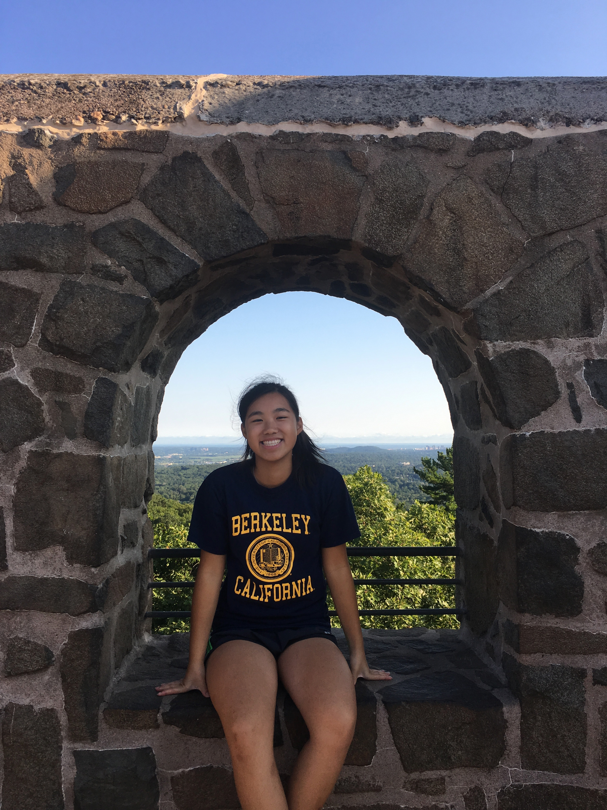
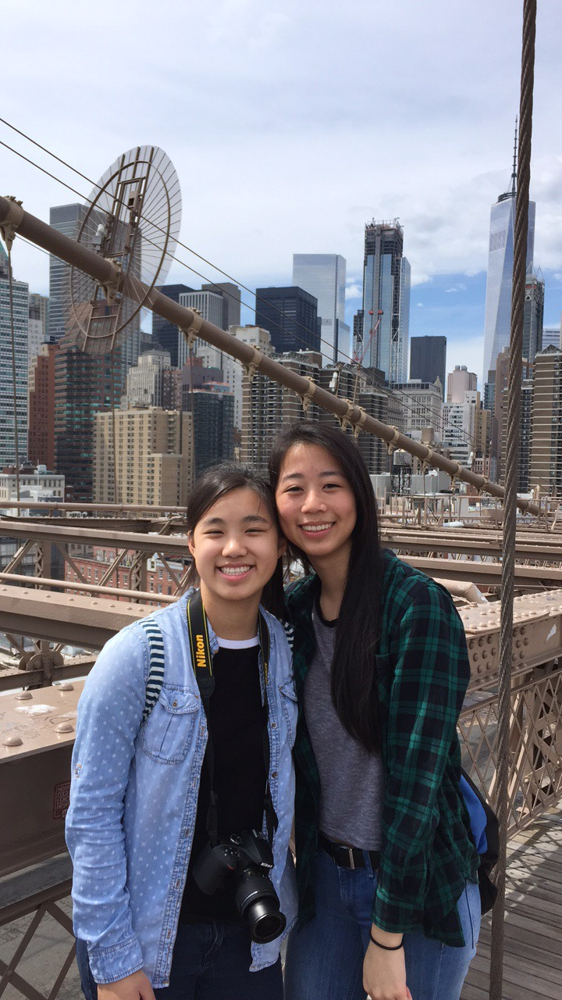
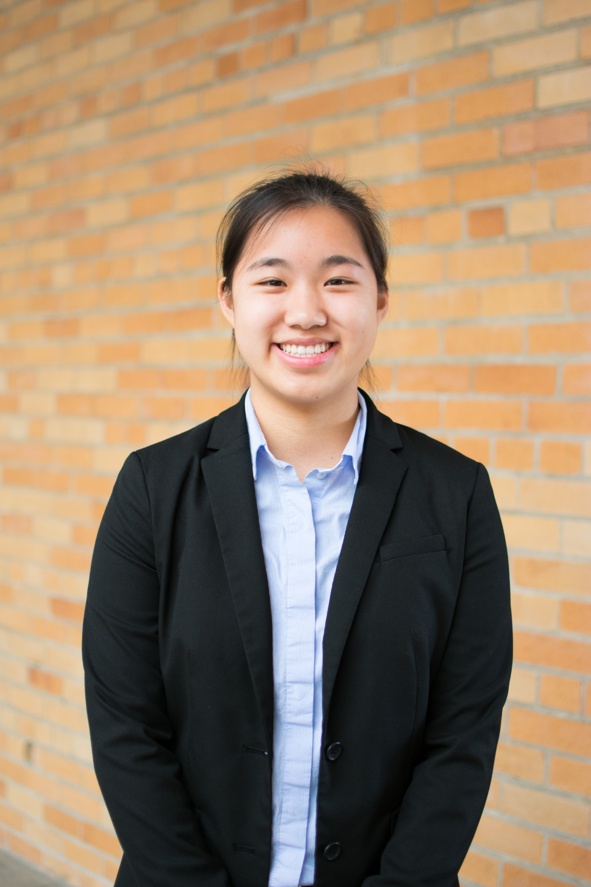
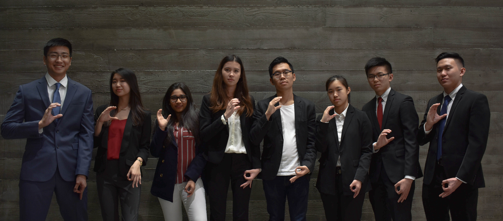

Hi! I'm Kai Chen! [THIS WEBSITE IS UNDER CONSTRUCTION]
About Me
Hello! My name is Kai Chen.
I am currently a third year at UC Berkeley double majoring in Economics and Data Science.
I am an out of state student from Connecticut! On campus, I am a part of a business organization called
Phi Beta Lambda as a Senior Analyst. I am also active as a community member in an organization called REACH! which is the
Asian Pacific Islander Recuirtment and Retention Center where I helped out as a family head or a volunteer during the many
high school mentorship conferences that they host at UC Berkeley. I have an interest in both tech and business as well as
helping other!




I immigranted to the US when I was 3 years old with my older brother and mother as my father moved to the US earlier to set up a life for us.
I am a first generation college student. I am able to speak a dialect of Cantonese called Taishanese. My family decided to settle in a
small town in Connecticut where I attended Norwich Free Academy for high school. There I was captain of the girls tennis team and participated
in many different clubs in order to try new things and learn more about my culture.
Feel free to click on the tabs and learn more about me! I want to be able to use this website to express myself even though I know my photographs,
blog posts are not the best! I want to learn new skills and explore more!
Thanks for visiting!
Contact Me!
Email: kailchen21@berkeley.edu
Instagram: kaiii.c
Facebook: Kai Chen